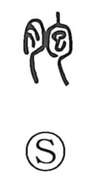

胞

Uncategorized
Kun: ena, harakara | On: hou
placenta ・ afterbirth ・ membrane ・ cell
Explanation
A phono-semantic character formed with the flesh/organ sign (月) and 包 as the phonetic. In ancient writing, 包 pictures an embryo enclosed in the mother’s belly, and from this image 胞 first meant ena—the afterbirth, the thin membrane or wrapping that surrounds the fetus and placenta—and even served as the name of a medicinal ingredient. From the sense of sharing the same womb it extends to words for siblings of one mother (as in dōhō), and by further abstraction to the basic bodily enclosure, the biological ‘cell’ (saibō).